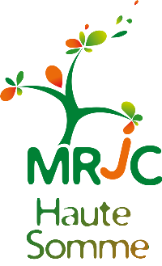
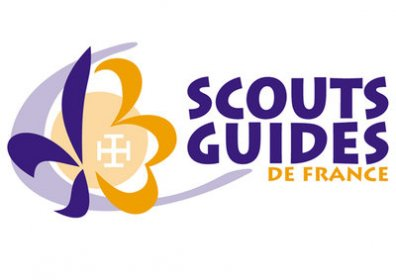

Paroisse Notre Dame de l'Assomption
Ham
Ham


Eveil à la foi des 3-7 ans
Eveiller un enfant à la foi, c'est l'accompagner dans la découverte de Dieu, l'initier à la vie chrétienne par la prière, les fêtes et les rites. C'est l'aider à prendre conscience du trésor d'amour que Dieu a déposé dans son coeur et l'initer à le rencontrer. Eveil à la foie et éveil à la vie sont en réalité indissociables.
Chaque second dimanche du mois, c'est la messe des familles à l'abbatiale Notre-Dame. Au cours de la première partie de la célébration, les 3-7 ans se retrouvent dans la sacristie pour un temps réservé à la prière. En préambule de cette rencontre, des travaux manuels leurs sont proposés par les animatrices. Il s'agit, par exemple, de la réalisation d'un triptyque avec le dessin d'une icône et d'un cierge pascal pour illustrer la prière. Les jeunes participants prennent beaucoup de plaisir à laisser aller leur imagination au bout du crayon avant de passer à la partie spirituelle en se retrouvant devant l'autel pour réciter avec l'assemblée le Notre Père autour du célébrant. Un moment important pour faire ses premiers pas dans la vie chrétienne avant le catéchisme.
L'éveil à la foi s'adresse aux plus jeunes, à partir de 3 ou 4 ans. Il s'agit des temps de rencontres et des temps de célébrations adaptées à leur âge.
Notre prochaine célébration d'éveil à la foi aura lieu le dimanche 12 avril 2015.
Qui contacter?
le 03/04/2015, écrit par JMD
Catéchèse
Le catéchisme s'adresse aux enfants scolarisés à l'école primaire.Qui contacter?
- responsable catéchèse primaire :
- responsable catéchèse Notre Dame :
- responsable catéchèse 6èmes :
Leur actualité :
Aumonerie
L'aumonerie s'adresse aux enfants scolarisés dans le secondaire. A partir de la classe de 6ème, les jeunes sont invités à participer aux activités de l'aumônerie, qui accompagne les années collège et lycée. L'aumônerie est un espace de parole, d'écoute, et de partage. On y vient pour parler de sa vie, de ses questions, de ses doutes, de ses joies, de ses enthousiastes et pour écouter la Parole de Dieu et en vivre.Qui contacter?
- responsable aumonerie des 6èmes, paroisse de Ham:
- responsable aumonerie des 6èmes, Notre Dame:
- responsable aumonerie des collèges:
Leur actualité:

Projet : Cette année 2014/2015, l'équipe va réaliser un clip vidéo pour présenter le MRJC. Elle participe également à des temps forts durant l’année (une journée pendant les vacances), aux camps d’été et aux mini-camps de pâques.
Projet : Cette année verra la réalisation d’un dossier à destination des établissements (salles des professeurs) afin de les encourager à passer au commerce équitable. L'équipe s'investit également sur les marchés locaux en vendant des produits issus du commerce équitable. Ils sont présents à Ham, le samedi matin une fois par mois et à Brouchy, le dernier dimanche matin du mois. Les jeunes participent égalment aux camps de l’été et mini-camps de pâques.
le 30/03/2015, écrit et enrichi par PhJ
Leur actualité :
- Au printemps, les jeunes vendent régulièrement des bouquets de jonquilles afin de financer les Mini-camps.
- Mini-camp de Pâques Lycéens à Belloy sur Somme du lundi 27 avril au mercredi 30 avril 2015 : consulter la brochure
- Mini-camp Pâques 6èmes à Devise du lundi 4 mai au mercredi 06 mai 2015: consulter la brochure
- Mini-camp Pâques Collégiens à Muirancourt du mercredi 06 mai au samedi 09 mai 2015 : consulter la brochure
Mouvement Rural de Jeunesse Chrétienne
Le MRJC (Mouvement Rural de Jeunesse Chrétienne) est une association d’éducation populaire gérée et animée par des jeunes de 12 à 30 ans. Sur la paroisse, il y a trois équipes d’une dizaine de jeunes qui se réunissent pour réaliser différents type de projets. Vous trouverez ici les projets en cours et surtout leur actualité:Equipe des 5ème/4ème :
Elle se réunit une fois par mois.Projet : Cette année 2014/2015, l'équipe va réaliser un clip vidéo pour présenter le MRJC. Elle participe également à des temps forts durant l’année (une journée pendant les vacances), aux camps d’été et aux mini-camps de pâques.
Equipe des 3ème/lycéens :
Cette équipe est le fruit de l'unification des équipes d'Athies et de Ham réalisée au mois de novembre suite à la demande de certains membres. Elle se réunit une fois toutes les trois semaines.Projet : Cette année verra la réalisation d’un dossier à destination des établissements (salles des professeurs) afin de les encourager à passer au commerce équitable. L'équipe s'investit également sur les marchés locaux en vendant des produits issus du commerce équitable. Ils sont présents à Ham, le samedi matin une fois par mois et à Brouchy, le dernier dimanche matin du mois. Les jeunes participent égalment aux camps de l’été et mini-camps de pâques.
Equipe des Lycéens/ Etudiants :
Projet : Cette équipe intervient dans les établissements scolaires pour présenter le commerce équitable. Elle participe à la vente de produits issus du marché équitable sur les marchés locaux. Cette équipe a en charge l'animation des mini-camps et camps.Equipe de Secteur :
Cette équipe qui est composée d’une petite dizaine des personnes se réunit une fois par trimestre pour l’organisation des différents temps forts, camps et mini-camp sur le secteur.Qui contacter ?
- Albert Saelens
- Philippe Jourdain: 07.88.10.72.32
- Leur page Facebook ici
le 30/03/2015, écrit et enrichi par PhJ
Leur actualité :
à vous la parole!
n'hésitez pas à nous contacter pour enrichir cette page
Scout
Les Scouts de France, association française créée en 1920, a été le principal mouvement de scoutisme en France. Elle disparaît en 2004 lors de sa fusion au sein des Scouts et Guides de France.
Reconnu d'utilité publique en 1927, le mouvement est à l'époque un mouvement de scoutisme tout en étant d'un catholicisme traditionnel. En 1940, les Scouts de France participent à la création de la fédération du scoutisme français. Ils connaissent leur apogée aux débuts des années 1960 quand ils comptent plus de 140 000 membres. En cohérence des réformes issues du concile Vatican II, la pédagogie est profondément revue, ce qui conduit au départ de nombreux jeunes vers les Guides et scouts d'Europe puis à la création du mouvement Scouts unitaires de France. En 1981, à la suite de l'échec du rapprochement avec les Guides de France, le mouvement s'ouvre à la coéducation.
Il incite ses jeunes membres à l'auto-éducation par la pédagogie spécifique du scoutisme dans un but de développement de la personnalité et de sociabilité active. Catholiques, les Scouts de France étaient, depuis le milieu des années 1980, ouverts à tous les jeunes, sans distinction d'origine, de culture ou de croyance.
En 2004, la fusion du mouvement avec les Guides de France est finalement décidée, par décision des assemblées générales des deux associations. La structure administrative est dissoute dans l'association Scouts et Guides de France.
source : ici
Site officiel de la paroisse de Ham maintenu par paroisseNdaHam@gmail.com - dernière mise à jour le 06/04/2015 - pour nous contacter